32. Motifs with dependent
occurrences along a sequence : a statistical analysis and an
application to Chi sites in E. Coli
Gaëlle Gusto 1, Sophie Schbath 2
Keywords: dependent occurrences, word
occurrences, point processes, splines, Chi sites, Hawkes
model
The study of word occurrences along a DNA sequence
is a classical problem in statistical analysis of genomes. It
concerns, for example, the frequence of a word [4] or the distance between word
occurrences [3].
Our objective is to model the dependence between
one or two word occurrences along a sequence in order to detect
possible correlations. These correlations can reveal a common
biological process in which both words are involved and a possible
protein interaction. Protein interactions can indeed impose some
constraints on the space between particular words. Then, we try
here to find such couples of words 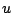 and
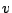.
Our statistical method consists in estimating the
intensity of the point process
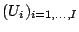 composed of the ordered
positions of the 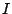 occurrences of the word
along a sequence. The word can be fixed or degenerated.
The intensity 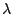 is
written in a linear model like :
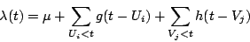
where
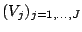 are the ordered
positions of the 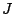 occurrences of the word
in the sequence. The term is positive and corresponds to the Poisson part of
the process, that is to say to the density of the points
 if they were located independently
from one another and did not depend on the positions
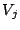's. We must estimate this parameter as
well as the two functions and
if they were located independently
from one another and did not depend on the positions
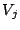's. We must estimate this parameter as
well as the two functions and  . These functions are our quantities of interest
since they caracterize the constraints between the word
occurrences. Let us consider the case of the function
: if a distance
. These functions are our quantities of interest
since they caracterize the constraints between the word
occurrences. Let us consider the case of the function
: if a distance  is a favored distance between the two words
and then the
intensity 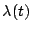 can be large if an
occurrence of appears bases before the position 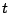, in other
words 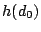 will be positive and large. On
the opposite, if the two words and
are avoided at a distance 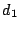 then the intensity should be penalized if an
occurrence of appear bases before the position , in other
words 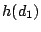 will be negative. The shape of
the function could then determine
favored and avoided distances between the two words
and . If the function
is considered to be null it means the
occurrences of the word are not
influenced by those of . In a symetrical
way, the function will determine the
dependencies between the occurrences of the word .
is a favored distance between the two words
and then the
intensity 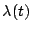 can be large if an
occurrence of appears bases before the position 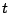, in other
words 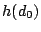 will be positive and large. On
the opposite, if the two words and
are avoided at a distance 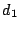 then the intensity should be penalized if an
occurrence of appear bases before the position , in other
words 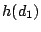 will be negative. The shape of
the function could then determine
favored and avoided distances between the two words
and . If the function
is considered to be null it means the
occurrences of the word are not
influenced by those of . In a symetrical
way, the function will determine the
dependencies between the occurrences of the word .
In order to estimate the parameters of the model
that is to say 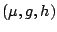, we parametrize
the functions and and we maximize the likelihood function using a
quasi-newton method.
We have adopted the approach of [2], where they used a decomposition
with the Laguerre functions
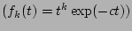. With this
decomposition we have succeeded to estimate the parameters
nevertheless this estimation can be made only if we consider the
parameter  like a fixed one.
like a fixed one.
In order to solve this problem, we used another
decomposition based on 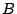-splines ([1]) which guarantees the unicity of
the maximum likelihood estimators. We have studied the asymptotic
properties of these estimators. For the moment, we use the AIC
criterion in order to choose the number of knots of the
-splines nevertheless we are studying
other methods to penalize the likelihood function depending of
the model dimension (number of knots).
This work has been inspired by the motif
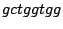, which is kwown like the Chi sequence
of the E.Coli bacteria, and the motif recognized by the
RuvC enzyme. The Chi sequence is essential to E. coli
since it is involved with the RecBCD enzyme, in the repair of the
bacteria genome and in the degradation of foreign DNA. The RuvC
enzyme is involved in the homologuous recombination by solving the
Holliday junction : it cuts the DNA strand at a specific
tetranucleotide. It seems that constraints exist between these two
words for the recombination to be well done. Another application
relies on the promotor detection since they are not dependent from
the gene occurrences. For the moment, knots are regularly spaced
but we want to improve our method by finding optimal knot locations
(CART).
- 1
- De Boor, C. 1978. A practical guide to splines. volume
27 Applied Mathematical Sciences.
- 2
- Ogata, Y., Akaike, H. 1982. On linear intensity models for
mixed doubly stochastic poisson and self-exciting point processes
In: J. R. Statist. Soc. B, 44:102-107.
- 3
- Robin, S., Daudin, J. J.. 1999. Exact distribution of word
occurrences in a random sequence of letters , J. Appl.
Prob., 36:179-193.
- 4
- Schbath, S., Prum, B. and Turckheim, E. 1995. Exceptional
motifs in different Markov chain models for a statistical analysis
of DNA sequences. J. Comp. Biol.. 2:417-437.
Footnotes
- ... Gusto1
- Unité Mathématique, Informatique et
Génome, INRA, 78352 Jouy-en-Josas, France. E-mail:
gaelle.gusto@jouy.inra.fr
- ... Schbath2
- Unité Mathématique, Informatique et
Génome, INRA, 78352 Jouy-en-Josas, France. E-mail:
sophie.schbath@jouy.inra.fr
2003-04-07